Why drill?
Mapping, geochemistry and geophysics tell you where to look. Only drilling lets you see the actual geology below the surface and sample it directly. It’s the only way to work out the potential size, shape and style of an ore deposit, and the only way to know whether you have one at all. You also have to drill and assay to show an ore body’s economic potential: in Australia that’s a JORC requirement before you can report a resource. slide 4
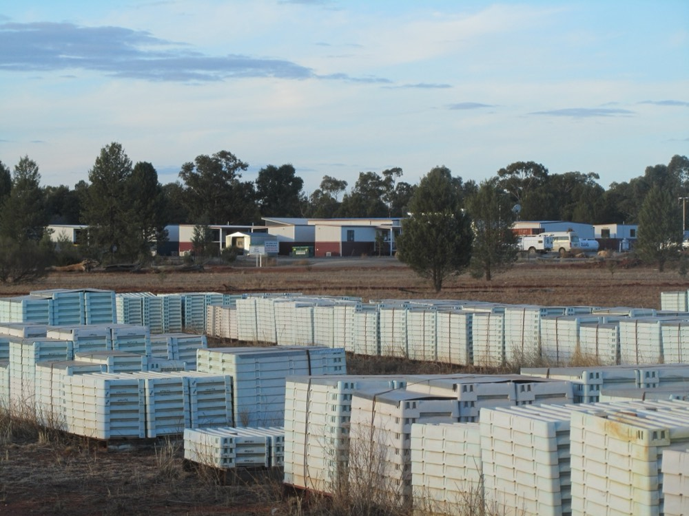
RAB, RC and diamond
Mineral exploration uses three main techniques, very different from oil and gas drilling. (RAB) is the cheap, fast first pass, most common in exploration. A polycrystalline diamond composite head smashes down into the ground, and compressed air blows the cuttings back up the outside of the rods, where they’re laid out on the ground, one pile for every metre. slides 5 to 9
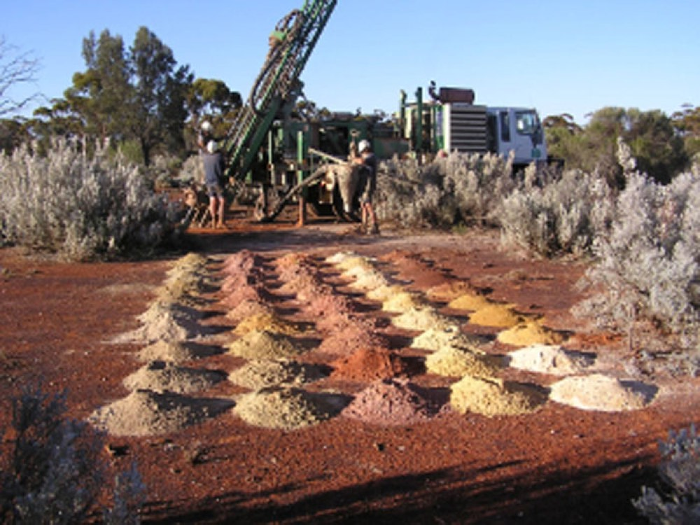
What is each little pile, and what does the colour change along a row tell you? How much would you trust these samples?
Show what I see
- Long rows of small piles of rock chips laid out in front of the rig.
- Along each row the colour changes from red-brown to orange to pale cream.
So each pile is the cuttings from one metre of a RAB hole, and each row is one hole read from the top down: the colour change is you passing down through the weathering profile. Useful for a first look, but RAB samples are low quality. They come up outside the rods, so chips from higher in the hole can mix in. slides 7, 9 and 27
(RC) is the workhorse of exploration and of drilling known targets such as mapped gossans or geochemical anomalies. The rods are double-barrelled: water goes down the outside casing and the cuttings are drawn back up the inner tube, so they’re far less contaminated than RAB chips. slides 10 to 16
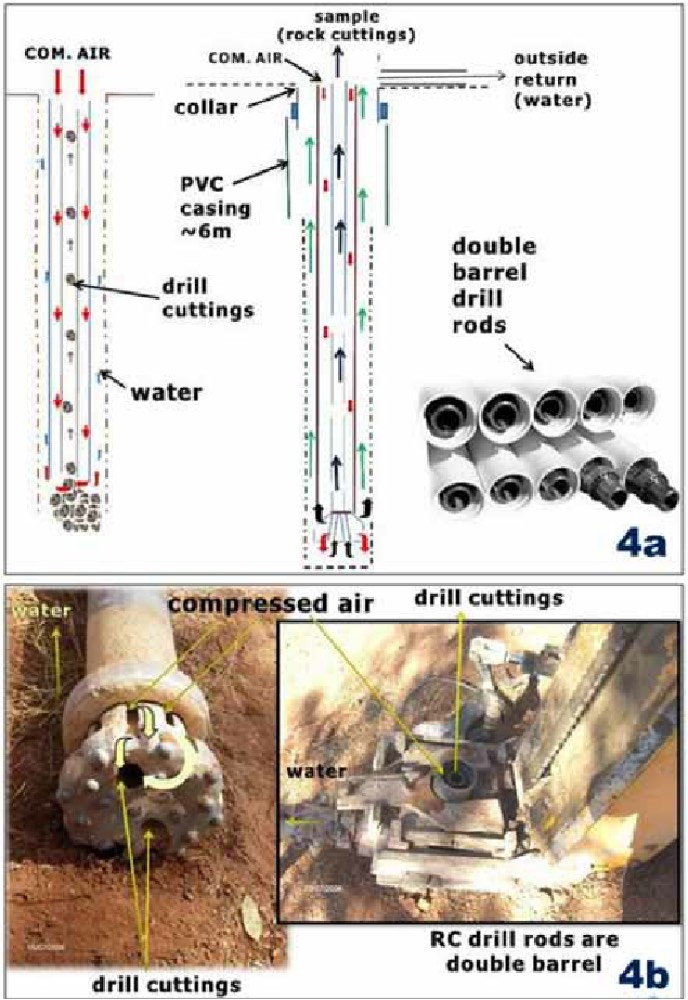
(DD) usually comes after good RC assays. A ring-shaped diamond bit cuts a solid cylinder of rock that slides up into an inner tube, which is winched out on a wire. You get coherent core from a known depth, uncontaminated, so you can see the geology directly. That’s what you need to prove a deposit and report it to the stock exchange. After logging and photography the core is usually cut in half: one half is crushed and assayed, the other kept for reference. Gold deposits are the exception: because of the , it’s common to assay all of the core. slides 17 to 24
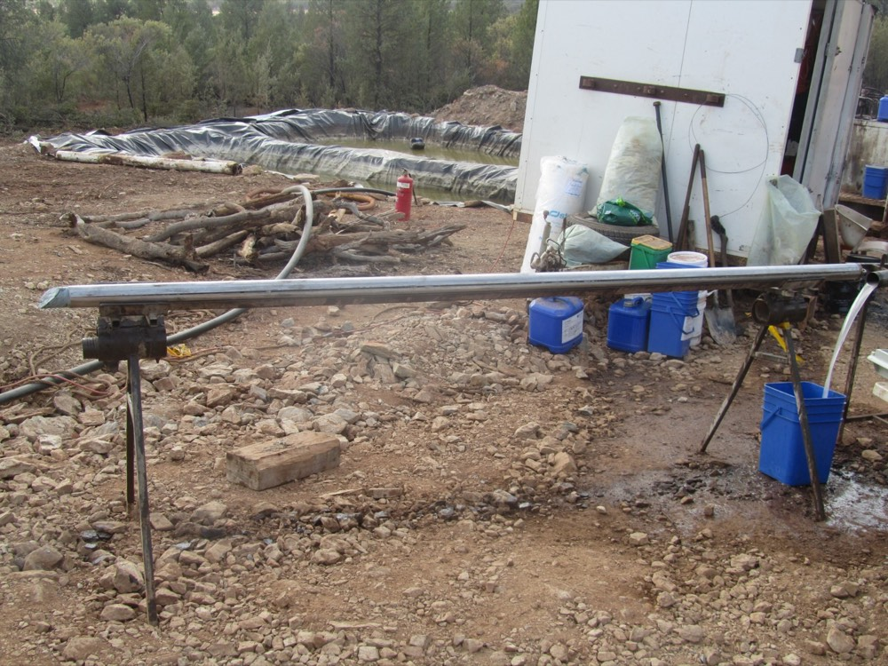
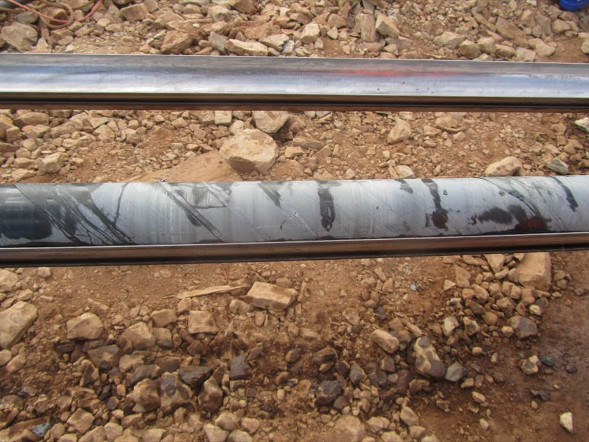
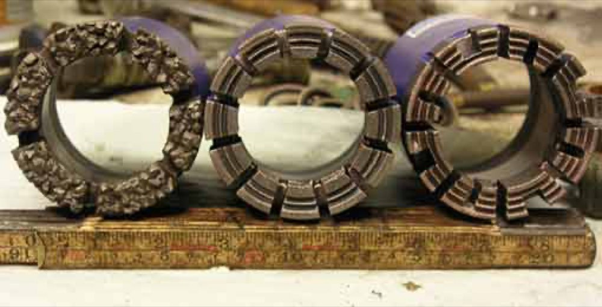
Choosing a method
| RAB | RC | Diamond | |
|---|---|---|---|
| Cost | Low (about $150/m) | Reasonable (about $200/m) | High (about $400/m) |
| Speed | Fast | Efficient | Slow |
| Sample quality | Low | Reliable | High |
| Depth | to about 125 m | to about 500 m | to about 1800 m |
| Sample | Chips, outside the rods | Chips, inside the inner tube | Solid core |
slides 27 and 28
The costs are all-in: contractor, the site geologist, transport to the core shed, logging and sampling per metre. Many holes are at least 300 m these days, so one 300 m diamond hole at $400 a metre is $120 000. (On slide 27 the diamond column’s “technique” cell repeats the air-blast wording of the other two; diamond actually cuts core, as on slides 17 to 23.) slides 27 and 28
Two more decisions. Hole angle: RAB and RC holes are usually vertical, and most diamond holes go in at 60° to cover the most ground, though resource drilling is often vertical. Whatever the method, angle the hole to cut across the local structures and the expected shape of the ore body. Sterilisation drilling: once the resource is defined, but before you decide where the processing plant, waste dumps, tailings dam and offices go, you drill those sites to make sure you aren’t burying ore under infrastructure. Many companies skimp on it because it costs money for no obvious benefit. slides 29 and 30
Which drilling?0 / 6
- RAB: cheap (~$150/m), fast, low quality, to ~125 m, greenfields.
- RC: ~$200/m, reliable chips, to ~500 m, brownfields and known targets.
- Diamond: ~$400/m, core from a known depth, to ~1800 m; needed to prove and report a deposit; half core assayed, all of it for gold.
- Sterilisation drilling checks infrastructure sites for ore before you build.
Core sizes
Diamond core comes in standard sizes named after the core barrel. The bigger the barrel, the more rock per metre, the better the sample, and the higher the cost. The table on slide 26 comes from a real site logging guide; here are the common ones, with what a metre of core weighs. slide 26
How much rock in a metre?
Diameters and core volume per metre from slide 26; the mass assumes a typical rock density of 2.7 g/cm³ (added for this example).
Reading a core tray
Core is laid out in trays in long rows at the core shed; at the Peak gold mine near Cobar the laid-out trays even have an overhead watering system. Every tray carries marks from the drillers and the geologists, and you need to read them before you log a single rock. slides 33 to 40
What does this mark tell you?0 / 6
Oriented core: alpha and beta
A loose cylinder of rock can spin, so on its own it can’t tell you the strike and dip of any bedding, vein or contact. You need an orientation mark. It costs extra and takes time, because it needs downhole orientation equipment (digital these days), so it isn’t always done. When it is, the drillers mark an along the core with a wax pencil: a straight line with arrows pointing down the hole. slides 41 to 43
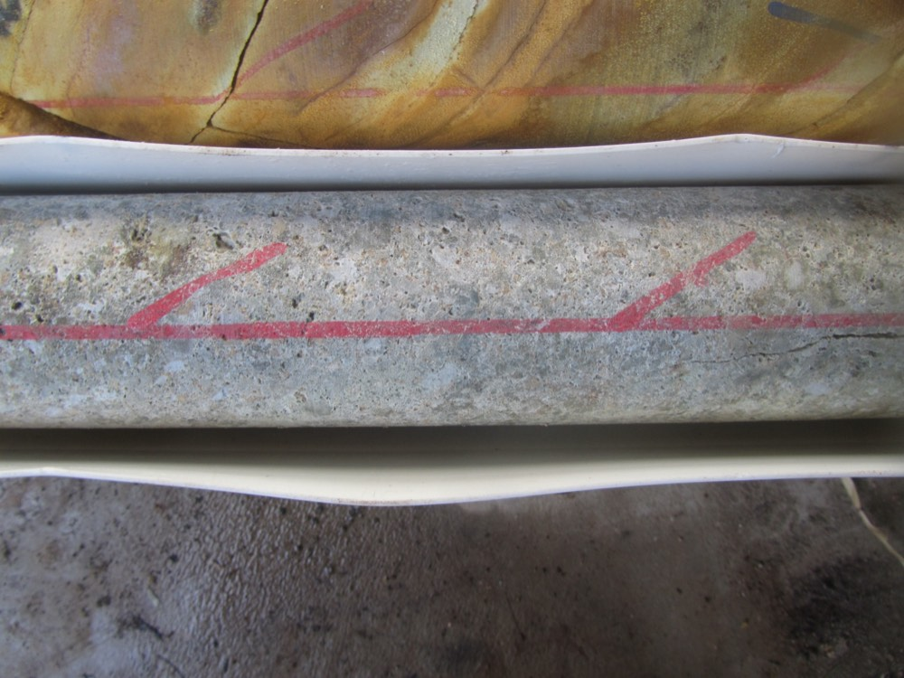
What is the long red line, and what are the short angled strokes for?
Show what I see
- A straight red line along the length of the core.
- Short red strokes angled off it, like arrowheads, all pointing the same way.
So it’s the orientation line, and the strokes are arrows pointing down the hole. Every structure you measure on this core is measured from that line, so you always know which way was down and which side was the bottom. slides 41 to 43
Two angles describe a planar structure in oriented core. is the angle between the core axis and the long axis of the ellipse the plane makes where it cuts the core: 90° means the plane is perpendicular to the core, near 0° means it runs along the core. is measured around the core, clockwise looking down the hole, from the bottom-of-hole line to the lower end of the ellipse’s long axis. With the hole’s own orientation, those two give you the true strike and dip. The structure has to cut right through the core to measure it. slides 44 to 47
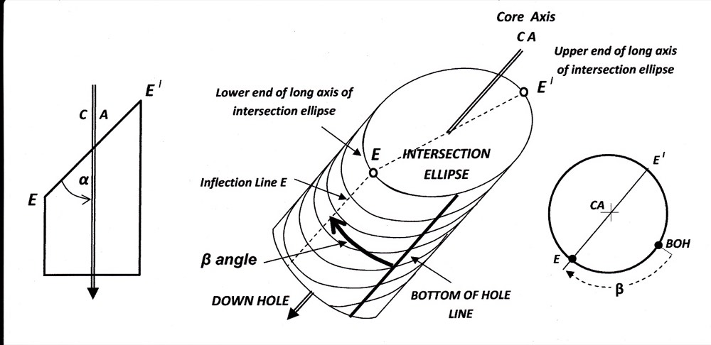
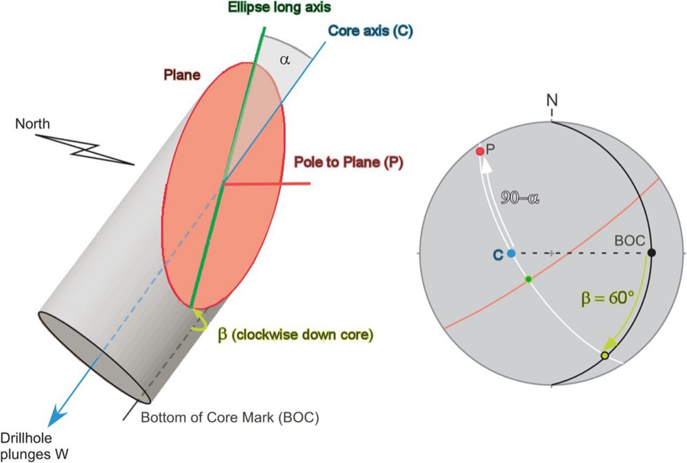
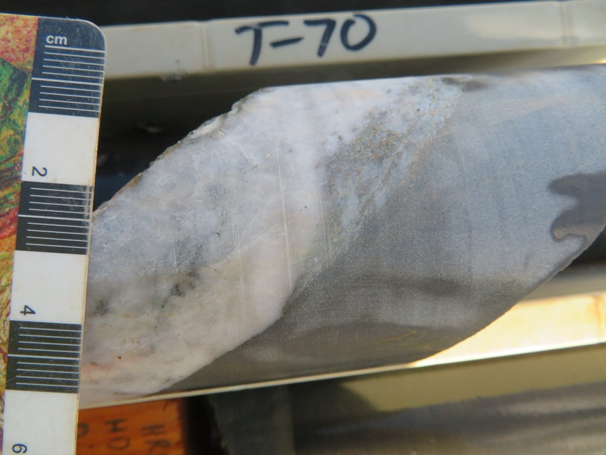
Cut the corealpha 45°
Teaching model. The true-thickness rule (intercept length × sin α, for a planar body) is standard drilling geometry added for this example, not from the slides.
What to log
Every company has its own logging method and its own codes and symbols, and most now log straight into spreadsheets with abbreviated codes on a rugged laptop. The content is the same everywhere: lithology; grain size (average and range); fracturing (intensity and spacing); mineralisation (type and intensity); alteration (type and intensity); structures (type and extent); and core loss. slides 51 and 52
Two habits matter more than the codes. Always check the metre mark-ups, because field assistants usually do them and mistakes are relatively common. And always log with a hand lens, a steel hardness scratcher and dilute hydrochloric acid beside you. slide 51
Which column of the log?0 / 7
- Describe core in the logging order: lithology, grain size, fracturing, mineralisation, alteration, structures, core loss. Give a type and an intensity for mineralisation and alteration.
- For any vein or contact, say its angle to the core axis, and use the hand lens, scratcher and acid before you name a mineral.
Logging real core
These intervals are from real holes, at the depths the slides give. Describe each one the way you’d log it before you check. slides 54 to 61
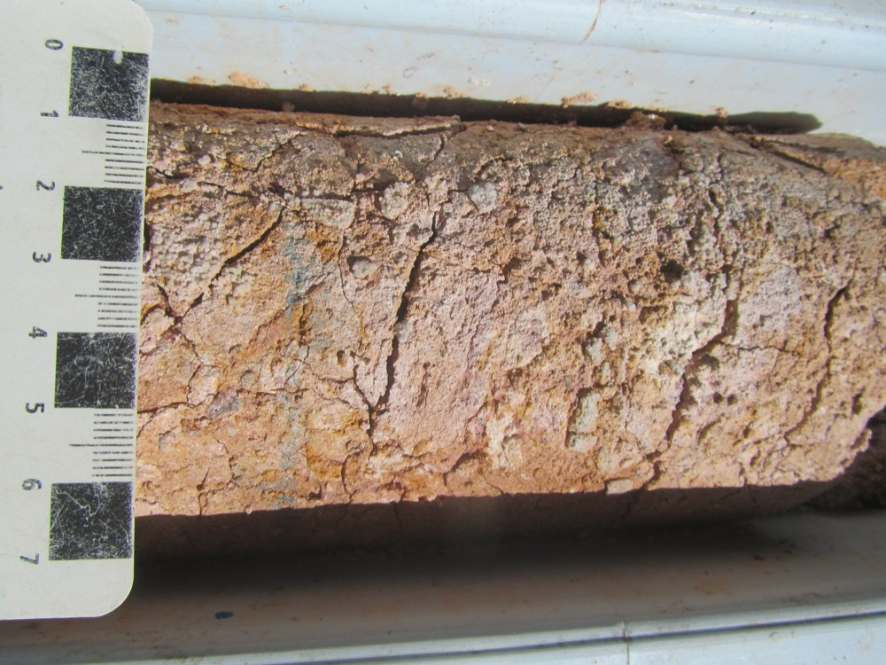
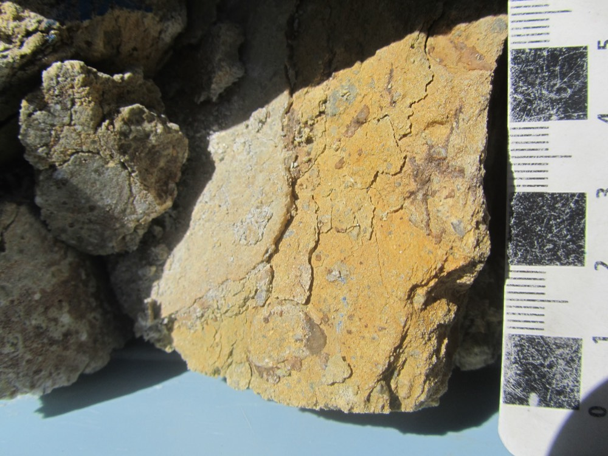
Both are from the weathered zone. What has happened to A, and what does the slide call the depth in B?
Show what I see
- A: soft-looking, pale pink to orange, cracked all over, no fresh minerals visible.
- B: broken, crumbly blocks with yellow-brown iron staining and some grey rock.
So A is completely weathered rock: kaolinite and hematite from weathering, the clay-and-iron-oxide top of the profile. B marks the base of oxidation at 23 m: below here the sulphides are fresh. Log it carefully, because the oxide and primary ores need different processing. slides 55 and 56
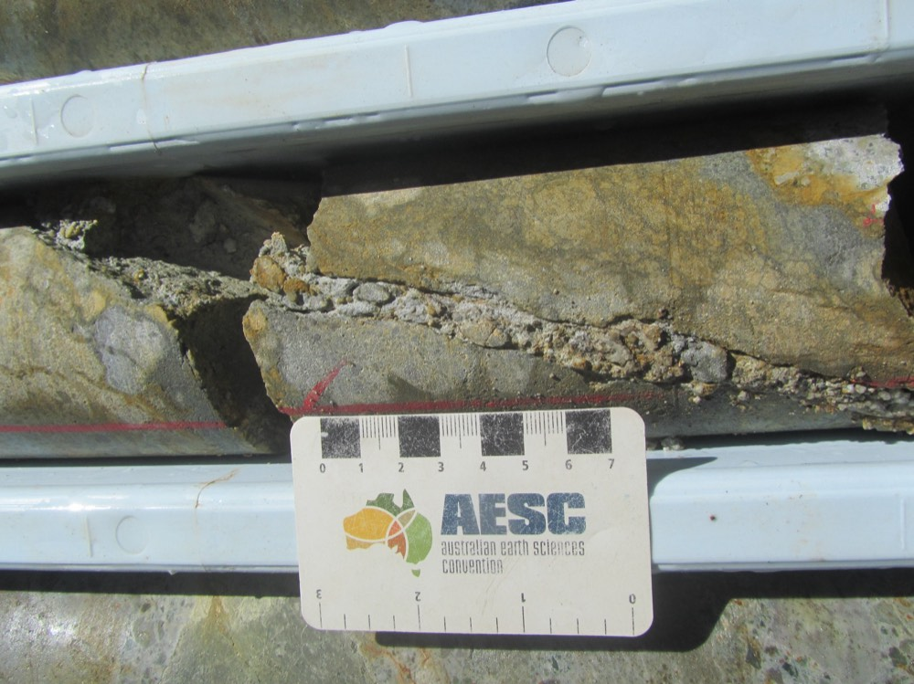
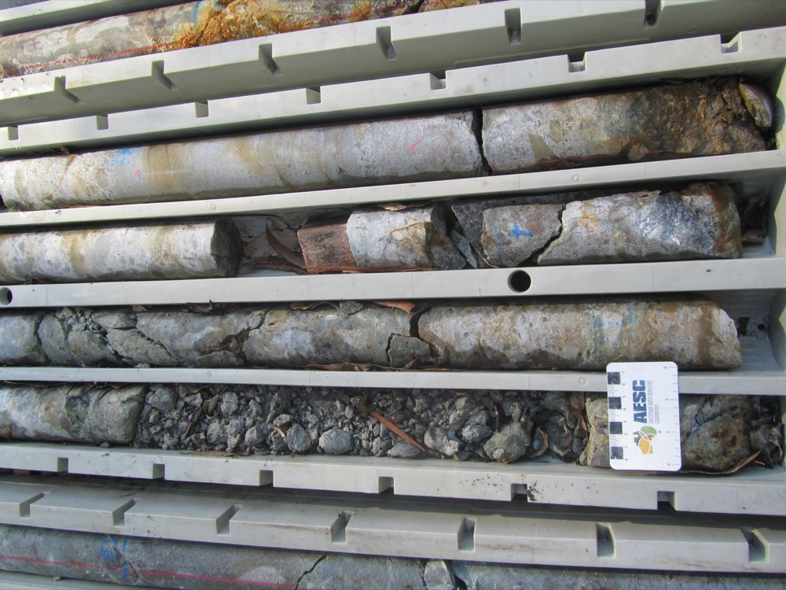
A is a 20 cm crushed zone. B is broken over a long length of core. What are they, and why is B so long?
Show what I see
- A: a narrow band of crushed, granular material, finer than the rock either side.
- B: rubble and fragments along most of a tray row, with intact core above and below.
So A is a shear zone with gouge, the ground-up rock along a fault. B is a fault zone running sub-parallel to the core axis: the hole went down along the fault instead of across it, so you get metres of broken core and almost no information about the fault’s orientation. That’s why you angle holes across the expected structures. slides 30, 57 and 58
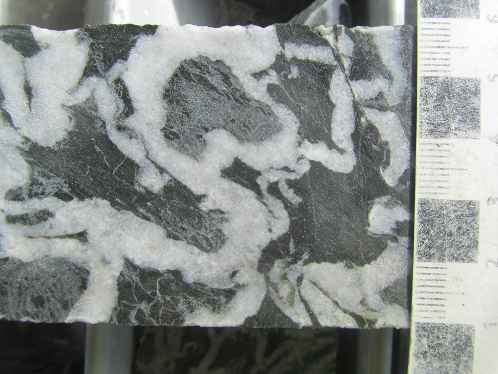
Log the host rock and the veins. What happened to the veins after they formed?
Show what I see
- Dark grey, fine-grained host rock.
- White veins bent into tight loops and hooks.
So these are folded quartz veins in siltstone. The veins formed first, then the rock was deformed and they folded with it, so the veining is older than (or early in) the deformation. That relative timing matters for orogenic gold, where you want to know which vein generation carries the gold. slide 59
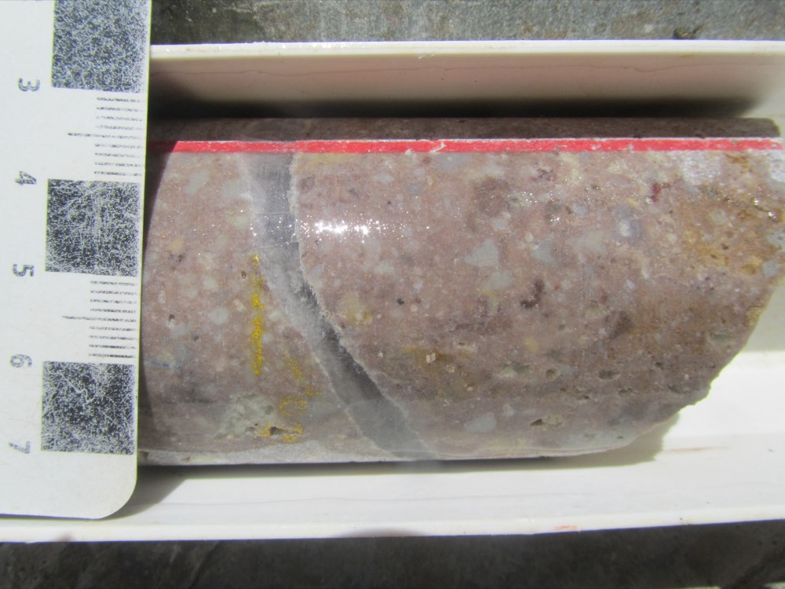
The thin pale vein is gypsum. Estimate its alpha angle. Is it a good structure to measure?
Show what I see
- A thin pale vein crossing the core almost straight across.
- A red line along the core: the orientation (or cut) line.
So the vein is at about 80° to the core axis, nearly perpendicular. It cuts right through the core, so it’s measurable: alpha 80°, and with the orientation line you could get beta too. slides 47 and 60
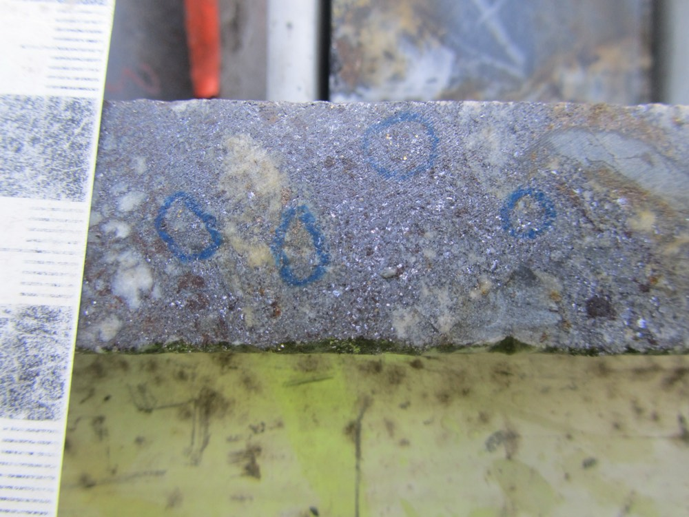
The core is massive sulphide. What do you think the blue circles mark, and why bother drawing them?
Show what I see
- Fine-grained, grey, metallic rock with no gangue to speak of.
- Small blue circles drawn around tiny bright specks.
So it’s massive sulphide with visible gold, each grain circled in blue. Visible gold is logged and marked so nobody misses it and the interval is sampled carefully. Because of the nugget effect, gold core is often assayed whole rather than halved. slides 17 and 61
When core goes bad
All sulphides are unstable at the Earth’s surface: they react with oxygen and turn to oxides. So core keeps changing after it’s drilled. Core with disseminated sulphides is especially vulnerable, and core stored somewhere humid or tropical (warmer, wetter) goes off far faster than core in an arid climate. Sulphide oxidation can even eat through metal core trays. The only fixes are wrapping the core in cling wrap or storing it in a freezer. slides 62 and 64
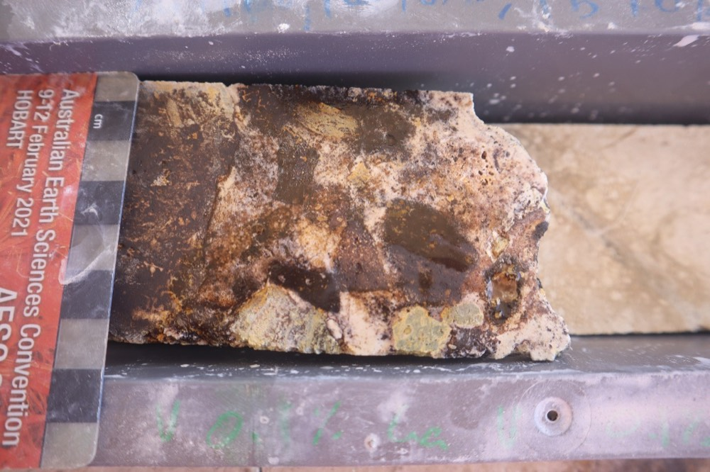
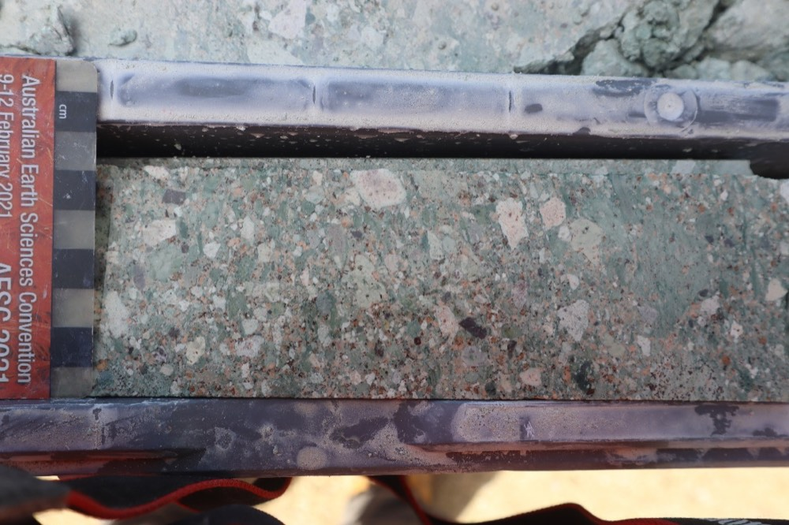
Both are tuff-breccia from the Bowdens silver deposit. One was drilled in 2021, the other in 2025. Which is which, and what happened to the older one?
Show what I see
- A: brown and orange stained, broken, the original texture hard to see.
- B: fresh, greenish grey, with clear pale fragments in a fine matrix.
So A is the older core, drilled in 2021 (164.7 m), and B the 2025 core (102.5 m). A’s sulphides have oxidised in storage, staining it and breaking it up; a few years in a core yard was enough. Log and photograph core as soon as it comes out. slides 62 and 63
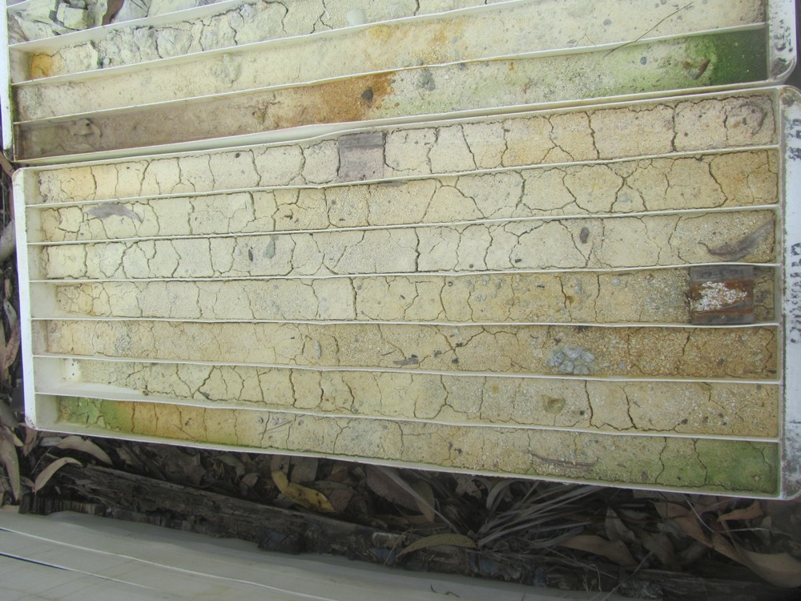
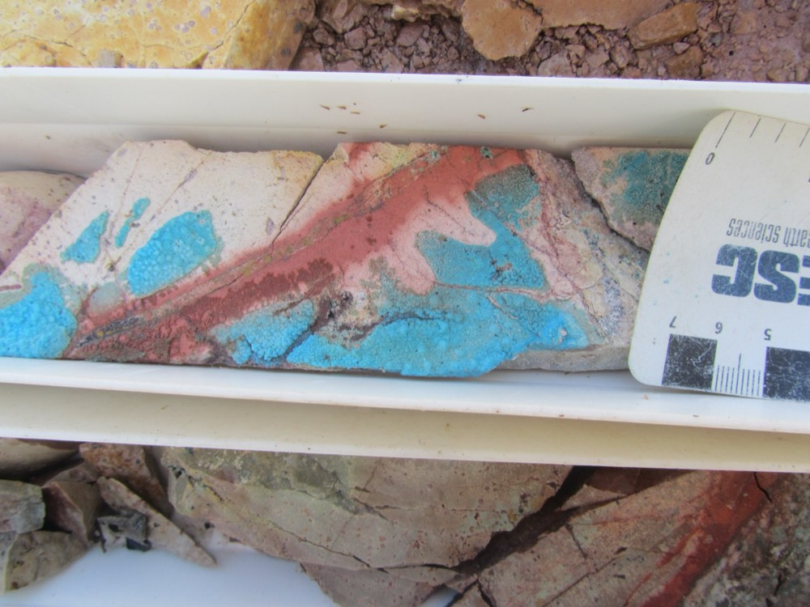
What has gone wrong in each tray?
Show what I see
- A: pale core crazed with cracks all over, falling apart.
- B: bright blue crusts growing on the core.
So A has been destroyed by abundant fine-grained, disseminated pyrite and marcasite oxidising (marcasite is especially unstable). B is encrusted with copper sulphates that grew after drilling as copper sulphides oxidised. Neither tells you anything about the original ore unless someone logged it first. slides 65 to 67
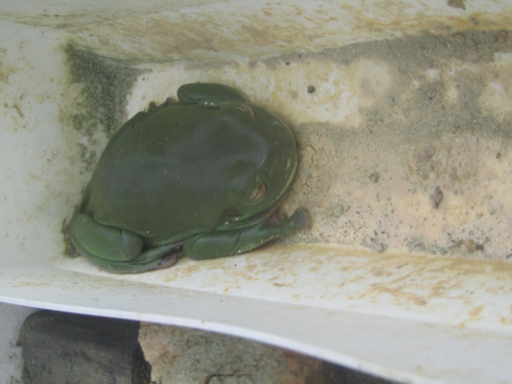
Self-test
Answer out loud or on paper before you open each one. Claim the ounces if you got it.
Glossary and flashcards
Terms this lab uses. The dotted words in the text open them in place.
Flashcards
Where this goes next
The weathering profile you log at the top of a hole is Lecture 2; the breccias, veins and textures you describe further down are Lecture 3; and the structures you measure in oriented core are Lecture 5. Lecture 3’s Cobar Basin core is good practice for everything on this page.